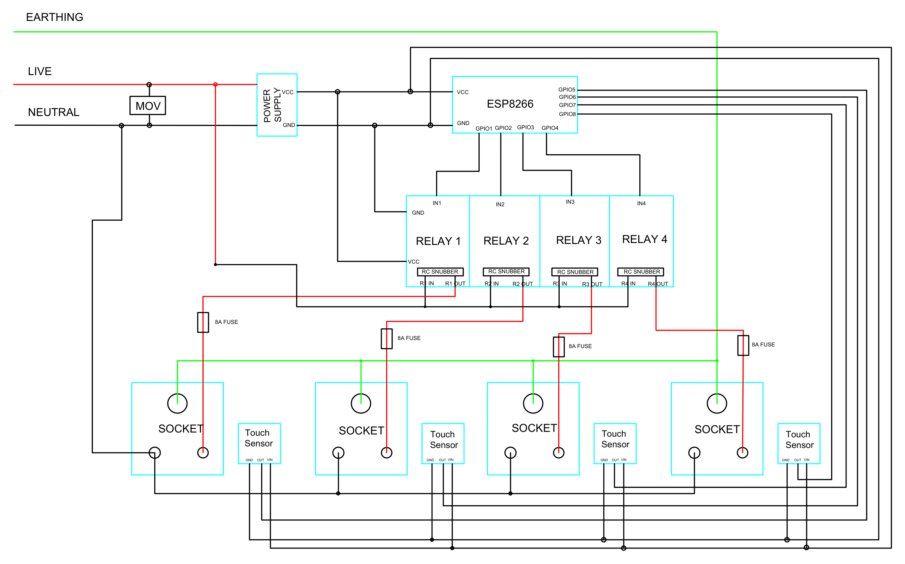

Smart WiFi Power Extension Board
Introduction
A custom IoT-enabled smart power strip engineered to bring wireless control, automation, and individual socket switching to ordinary home appliances over local WiFi.
Technical Details & Approach
Why I Built This:
Commercial smart plugs available in the market are either overpriced, bulky, or rely on shady cloud servers with terrible latency and privacy issues. I wanted an integrated multi-socket power extension board where every single outlet could be toggled independently via a local web interface or smartphone without relying on external cloud servers or an active internet connection.
Hardware Architecture & High-Voltage Safety:
I took a standard multi-outlet extension chassis and gutted its internals to retrofit microcontroller control. The system uses an ESP microcontroller connected to an opto-isolated relay board to switch high-voltage 220V AC lines safely. The high-voltage AC traces were physically isolated from low-voltage DC logic with routed air gaps to prevent arcing and protect the microcontroller.
Power for the ESP microcontroller and relays is derived directly from the 220V AC mains using a compact step-down power supply module (Hi-Link HLK-PM01), eliminating the need for an external wall adapter.

Figure: Internal Relay Wiring, AC Mains Routing & Controller Isolation.

Figure: Complete Circuit Schematic — showing AC surge protection (MOV), opto-isolated relay switching, 8A per-channel fuses, RC snubbers, touch sensor inputs, and ESP control circuitry.
Key Features & Electrical Protection
- 1. MOV for Overvoltage Protection: A Metal Oxide Varistor (MOV) is wired across the incoming AC mains to clamp transient voltage spikes, line noise, and lightning surges before they reach sensitive components.
- 2. 8A Fuse per Channel for Short Circuit Protection: Each individual relay socket channel is fitted with a dedicated 8A fuse, ensuring that any downstream appliance short circuit or overcurrent condition is isolated to that specific outlet without blowing the main line.
- 3. RC Snubbers on Each Relay: Dedicated Resistor-Capacitor (RC) snubber networks are placed across each relay contact to suppress inductive kickback and eliminate contact arcing during inductive load switching (e.g., fans, motors, power adapters), drastically extending relay lifespan.
- 4. Dual Control (Touch Sensors & Wireless Web Interface): Sockets can be controlled physically via capacitive touch sensors fixed right beside each socket or operated wirelessly from any smartphone, tablet, or laptop through the onboard local web page.
- 5. Extra Safety via Segregated Mains & Low-Voltage Lines: High-voltage 220V AC mains traces and wiring are physically segregated from low-voltage 3.3V/5V microcontroller lines with isolation air gaps and optocouplers to prevent arcing and ensure complete user and device safety.
Firmware & Local Network Control:
The microcontroller hosts an asynchronous web server directly on your local WiFi network, serving a clean, responsive mobile control UI with instant tactile feedback and state persistence across power outages.
Components: ESP8266 / NodeMCU Wi-Fi microcontroller, multi-channel opto-isolated 5V relay module (10A 250V AC), Hi-Link HLK-PM01 AC-to-DC step-down module (220V AC to 5V DC), Metal Oxide Varistors (MOVs), 8A fast-blow fuses & fuse holders, RC snubber circuits, capacitive touch sensors, heavy-duty copper bus strips, multi-socket 3-pin outlets, status indicator LEDs, and insulated enclosure.
Note: Demo video will be uploaded on YouTube and linked here soon.